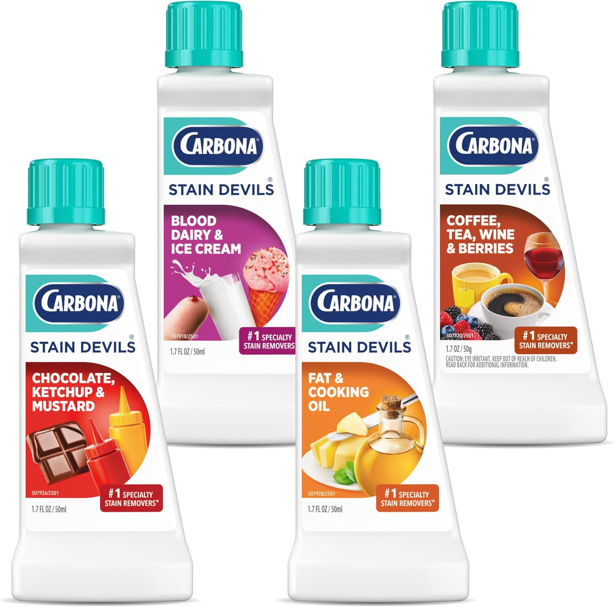
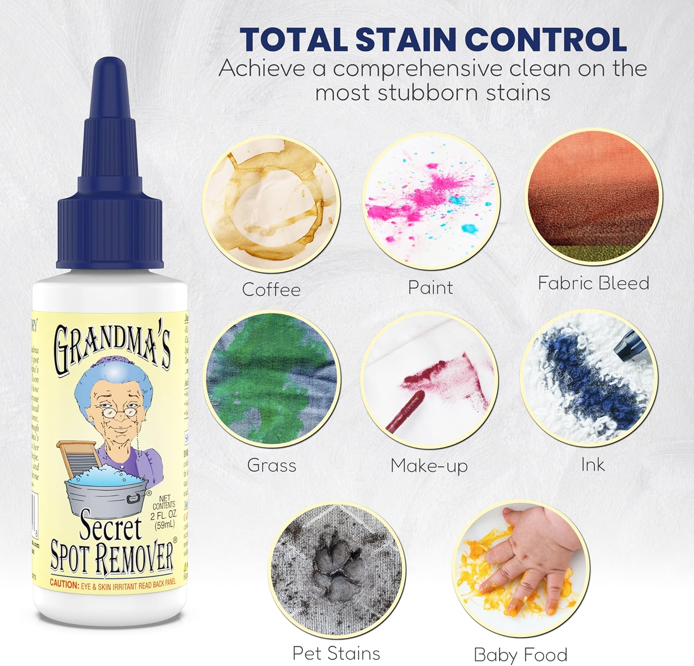
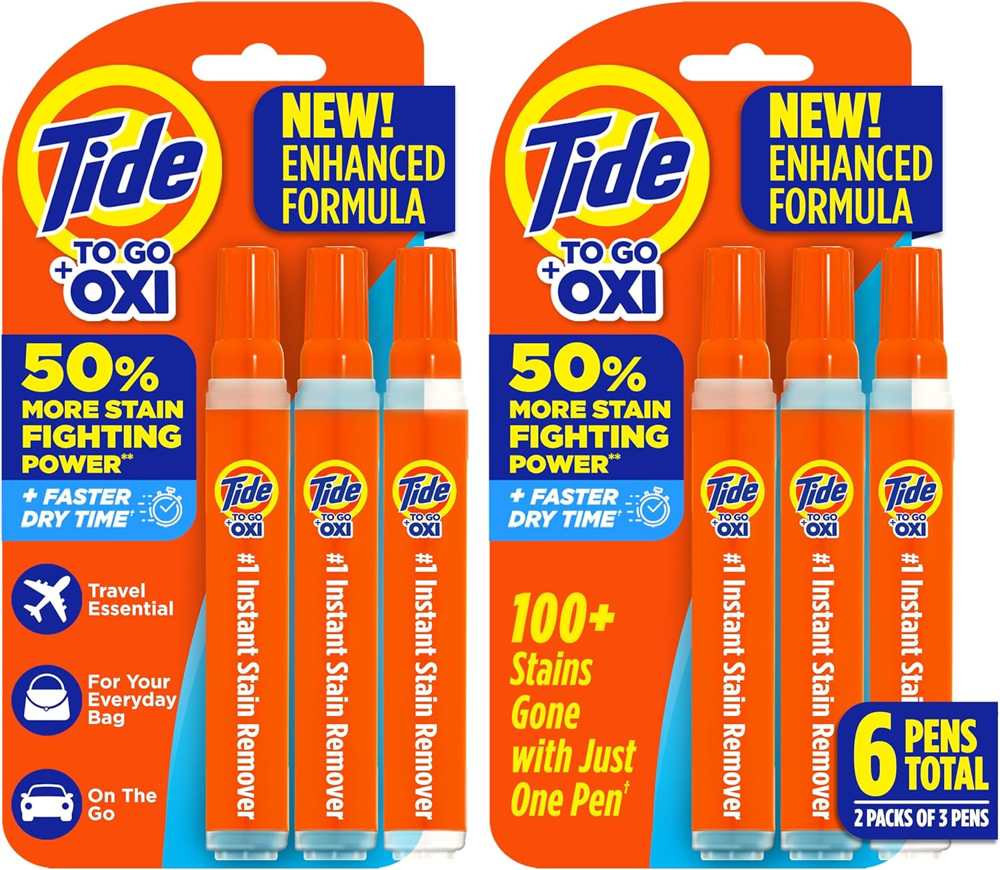

Carbona Stain Devils Complete Kit
A targeted 9-bottle kit where each formula tackles one specific stain type: ink, blood, rust, and more.
- 9 specialized formulas
- Targets specific stain types
- Includes treatment guide
Spills and splatters ruin favorite shirts fast. A powerful stain pre-treater and an enzyme-based spray can lift tough marks before they set permanently.

The single most effective tool for stains is an Enzyme-Based Stain Remover Spray. It breaks down protein, oil, and tannin stains at the molecular level before they set.
Most people toss stained clothes straight into the laundry hamper and forget about them for days. By the time the washing machine runs, the stain has already bonded to the fabric fibers.
Treat every stain within 5 minutes of it happening. Even just running cold water through the back of the fabric immediately can prevent 80% of stains from becoming permanent.

A targeted 9-bottle kit where each formula tackles one specific stain type: ink, blood, rust, and more.

A tiny bottle of concentrated spot cleaner that works miracles on oil-based stains and ring-around-the-collar.

A pocket-sized pen that erases fresh stains on the spot before they have time to set.
Keep a spray bottle of OxiClean at home and a Tide pen in your bag for emergencies. That pair handles 95% of everyday stains.
| Product | Best for | What it helps with | Why people like it |
|---|---|---|---|
| OxiClean MaxForce | Everyday food stains | Breaking down proteins & tannins | 5-in-1 cleaning power, safe on colors |
| Shout Advanced Gel | Grease & oil stains | Deep scrub penetration | Brush applicator for tough marks |
| Carbona Stain Devils Kit | Specific tough stains | Targeting ink, blood, rust individually | 9-bottle specialist formula set |
| Tide To Go Pen | On-the-go emergencies | Instant spot treatment anywhere | Pocket size, no water needed |